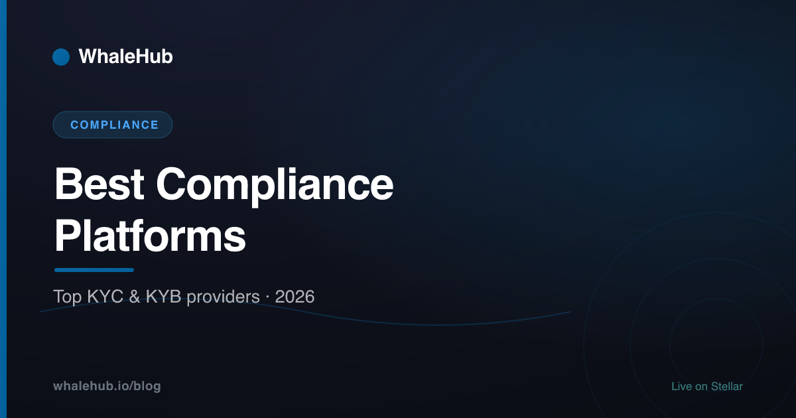

Best KYC & KYB Compliance Platforms in 2026

If your business touches money, you eventually meet compliance software. In the era of the EU's MiCA regulation and tightening FATF standards, verifying who your customers are — and screening them against sanctions and watchlists — is no longer optional for crypto and fintech firms. This guide explains what to look for in a KYC, KYB, and AML platform, then profiles six real, established vendors. It is an educational roundup, not a paid ranking or legal advice.
We scoped this roundup around five capabilities that matter for regulated crypto and fintech onboarding: identity (KYC) document and biometric checks, KYB and UBO business verification, AML / PEP / sanctions screening, geographic and document coverage, and developer integration (APIs, SDKs, and dashboards).
WhaleHub is the publisher of this article. WhaleHub is a non-custodial yield optimizer on Stellar — not a compliance vendor — so we have no product in this category and no commercial stake in which tool you pick. Vendor facts below were checked against each company's own materials. This is educational context, not a sponsored placement, and vendors did not pay to appear.
What to look for in a compliance platform
A strong compliance platform covers five things: verifying individual identities (KYC), verifying businesses and their beneficial owners (KYB/UBO), screening everyone against sanctions and PEP lists (AML), keeping that screening current with ongoing monitoring, and integrating cleanly into your product. Coverage — how many countries and document types it supports — cuts across all five.
Most vendors in this space now bundle these capabilities into a single "orchestration" layer, so the real question is how well each piece fits your users, your markets, and your risk appetite. Here is how to read each dimension.
Identity (KYC) coverage
At its core, KYC means confirming a real person is who they claim to be. Modern platforms capture a government ID and a selfie, then use AI to match the face to the document and run liveness detection to defeat photos, masks, and deepfakes. Two practical questions: how many document types and countries are supported, and how the vendor handles increasingly convincing generative-AI spoofing. If you serve a global user base, broad document coverage directly affects your pass rate. For a full primer on the mechanics, see our explainer on KYC and KYB.
Business verification (KYB) & UBO
KYB is the corporate equivalent of KYC: verifying that a business is legitimately registered and identifying the humans behind it. The hardest part is the ultimate beneficial owner (UBO) — tracing ownership through layers of holding companies to the real individuals who control a firm. Good KYB tools query official company registries, map the ownership tree, and run the same AML screening on each owner. If you onboard businesses (B2B fintech, exchanges, marketplaces), KYB depth is often the deciding factor.
AML / PEP / sanctions screening
Anti-money-laundering screening checks every customer against three kinds of lists: government sanctions (OFAC, UN, EU, and others), politically exposed persons (PEPs) who carry elevated corruption risk, and adverse media — negative news linking someone to financial crime. The quality here comes down to how comprehensive and how current the underlying data is, and how well the tool suppresses false positives so your analysts are not drowning in noise.
Ongoing monitoring
Compliance is not a one-time gate at signup. Sanctions lists change, and a clean customer today can appear on a watchlist tomorrow. Ongoing (or perpetual) monitoring re-screens your existing customer base and alerts you when someone's status changes. For any firm holding long-lived accounts, this is what keeps you compliant between onboarding events rather than just at the front door.
Integration & UX
Finally, the software has to fit your stack and your users. Look for a well-documented REST API, native mobile SDKs, no-code flow builders for teams without engineers, and a case-management dashboard for manual review. Just as important is the end-user experience: every extra second or failed capture in an onboarding flow costs you real conversions, so friction and drop-off are business metrics, not just design details.
Platforms at a glance
The table below summarises six established identity-verification and compliance vendors. All six offer KYC and AML screening; they differ most in KYB depth, coverage, and who they best fit. Details and sources follow in each section.
| Platform | Focus / best for | KYC | KYB |
|---|---|---|---|
| iDenfy | Full-stack KYC + KYB + AML with pay-per-approval pricing; SMB to mid-market | Yes | Yes (UBO) |
| Sumsub | Full-cycle verification & anti-fraud at scale; crypto and payments | Yes | Yes (UBO) |
| Onfido (Entrust) | AI document + biometric IDV inside a broader security suite | Yes | Limited |
| Jumio | Enterprise eKYC & AML orchestration; regulated finance | Yes | Via platform |
| Veriff | High-accuracy IDV with deep signal analysis; global consumer onboarding | Yes | Via partners |
| Persona | Configurable, no-code identity workflows; integrated KYB-KYC | Yes | Yes (UBO) |
iDenfy
iDenfy is a Lithuania-based identity verification and compliance platform, founded in Kaunas in 2017. It delivers full-stack KYC (document-and-selfie verification with 3D liveness), business verification (KYB) with ultimate-beneficial-owner checks, and ongoing AML screening for sanctions, PEPs, and adverse media — all under a distinctive pay-per-approved-verification pricing model.
iDenfy packages the whole compliance stack behind one API. On the KYC side it supports document extraction across a very wide range of government-issued IDs and combines active and passive liveness to resist spoofing, with manual review as a backstop. Its KYB solution queries company registries across many jurisdictions to map ownership and run UBO checks, and its AML layer screens against sanctions, PEP, and watchlist data with continuous monitoring. It also offers adjacent checks — phone, address, bank-account, age, and email verification.
Two concrete strengths stand out. First, the pay-per-approval pricing: you are billed for successful verifications rather than every failed attempt, which is unusual in the market and predictable for smaller teams. Second, the breadth of registry coverage for KYB and UBO mapping in a single integration. iDenfy fits SMB-to-mid-market crypto, fintech, and ecommerce firms that want KYC, KYB, and AML from one vendor without an enterprise-scale procurement process. Learn more at idenfy.com.
Sumsub
Sumsub is a London-headquartered verification platform founded in 2015. It positions itself as a full-cycle solution spanning KYC, KYB, AML screening, transaction monitoring, Travel Rule compliance, and anti-fraud — all configurable from one dashboard. It reports serving thousands of companies and supporting a very broad range of countries and document types.
Sumsub's appeal is breadth under one roof: identity, business, and anti-fraud signals combined into a single orchestration layer, delivered through a REST API, web and mobile SDKs, and no-code flows. Its KYB includes corporate registry checks, ownership and control mapping, and UBO verification, and its AML runs sanctions, PEP, and watchlist screening at onboarding and on an ongoing basis. It is a common shortlist name for crypto exchanges and payments firms that need Travel Rule support and want to consolidate fraud and compliance tooling.
Explore it at sumsub.com.
Onfido (an Entrust company)
Onfido is an AI-based identity verification specialist that verifies people using a photo ID, a selfie, and machine-learning algorithms. It was acquired by the security company Entrust in 2024 and now sits inside Entrust's identity portfolio, often branded Entrust IDV, supporting a large catalogue of document types across many countries.
Onfido's historic strength is document and biometric verification — smart-capture SDKs, wide document support, and passive fraud-detection signals that build a risk-based view of each user. Being part of Entrust folds that IDV capability into a broader digital-security and identity suite, which suits organisations that want verification alongside wider identity and access tooling. It leans more toward consumer KYC and biometric assurance than deep, registry-driven KYB.
It now lives within Entrust's identity verification products.
Jumio
Jumio is a Palo Alto-based identity verification and eKYC company founded in 2010, making it one of the longer-established names in the space. Its KYX Platform combines document verification, biometric authentication, and AML screening into a single orchestration layer for onboarding and continuous monitoring, with support for thousands of ID types across 200+ countries.
Jumio's strengths are its enterprise-grade orchestration and its deep liveness and deepfake-resistant biometrics, backed by hundreds of data sources for additional validation. AML screening against PEPs and sanctions is built into the same platform, and it offers both fully customisable API/SDK integrations and a ready-made web client. Jumio tends to fit larger, heavily regulated financial institutions that need a mature, orchestrated eKYC-plus-AML stack.
See jumio.com.
Veriff
Veriff is a global identity verification company founded in 2015 and headquartered in Tallinn, Estonia. Its platform analyses a large number of signals per verification session to detect fraud and confirm identities, pairing automated document checks and biometric liveness with AML screening. It supports thousands of document types across more than 200 countries and dozens of languages.
Veriff's calling card is signal-driven accuracy — analysing many data points per session for fast, automated decisions — combined with a low-friction capture flow. Its AML screening covers major sanctions and PEP watchlists (OFAC, UN, EU, and others) plus adverse-media scanning across a very large set of sources, and it adds proof-of-address and age-verification checks. Veriff fits firms prioritising a smooth, high-accuracy consumer onboarding experience at global scale; deeper KYB is typically handled via partners.
See veriff.com.
Persona
Persona is a San Francisco-based identity platform founded in 2018, available across 200+ countries. Its differentiator is configurability: teams build custom verification and onboarding flows in a no-code editor, chaining ID checks, database lookups, and manual review. Persona offers an integrated KYB-KYC solution with beneficial-owner verification and watchlist and adverse-media screening.
Persona's strengths are its no-code workflow builder and its unified case view that consolidates business and beneficial-owner data for KYB investigations. Because flows are highly customisable, it appeals to product and operations teams that want to design their own risk logic rather than accept a fixed vendor journey. Persona combines government-ID plus selfie KYC with business-entity verification, UBO checks, and screening, making it a fit for firms that value flexibility and orchestration.
See withpersona.com.
Compliance and the DeFi frontier
Compliance platforms exist to serve identifiable intermediaries — exchanges, custodians, issuers, and fintech apps — the very entities that regulations like MiCA and FATF standards target. Fully decentralised protocols work differently: they have no operator to run KYC at a front door, which is precisely the boundary regulators are still drawing.
The tools in this roundup matter most to businesses that onboard customers. If you run a centralised exchange or a euro on-ramp, you almost certainly need one of these platforms to satisfy KYC/KYB and AML obligations. Our companion guide on MiCA, stablecoins, and DeFi unpacks how the EU regime distinguishes issuers and service providers from genuinely decentralised systems, and our KYC and KYB explainer covers the underlying checks in depth.
Decentralised protocols on networks like Stellar sit on the other side of that line. A non-custodial smart contract that anyone can interact with is not the same as a company operating an account for you — a distinction our Stellar DeFi guide explores. WhaleHub itself is a case in point: it is a non-custodial yield optimizer, not an intermediary that verifies identities, and it does not run KYC. When you stake AQUA you receive BLUB as a liquid receipt whose value floats with the market — it is not a stablecoin and is never pegged or redeemable at a fixed rate.
There is no universal "best" compliance platform — the right choice depends on whether you onboard consumers or businesses, which markets you serve, your volumes, and how much you want to build versus buy. iDenfy stands out for delivering full-stack KYC, KYB, and AML under transparent pay-per-approval pricing, while Sumsub, Jumio, Veriff, Onfido, and Persona each bring distinct strengths. Shortlist two or three, run a pilot on your real traffic, and verify every detail directly with the vendor before you commit.
Frequently asked questions
What is a KYC/KYB compliance platform?
A KYC/KYB compliance platform is software that verifies the identity of individual customers (KYC) and business entities (KYB), then screens them against sanctions, PEP, and watchlist databases (AML). It automates onboarding checks and ongoing monitoring so regulated firms can meet their legal obligations.
What is iDenfy?
iDenfy is a Lithuania-based identity verification and compliance platform founded in 2017. It offers document-and-selfie KYC, business verification (KYB) with UBO checks against company registries, and ongoing AML screening for sanctions, PEPs, and adverse media, billed on a pay-per-approved-verification model.
Which compliance platform is best for crypto?
There is no single best platform; it depends on your markets, volumes, and integration needs. Crypto firms often shortlist vendors with strong AML screening, Travel Rule support, and broad document coverage, then run a pilot. This roundup is educational and not a paid ranking, so evaluate each against your own requirements.
Do compliance platforms handle AML screening?
Yes. Most identity-verification platforms bundle AML screening that checks customers against sanctions lists, politically exposed person (PEP) databases, and adverse media, plus ongoing monitoring for changes. iDenfy, Sumsub, Jumio, Veriff, and others all offer sanctions and PEP screening alongside their KYC and KYB checks.
How much do KYC platforms cost?
Pricing varies widely by provider, verification volume, the checks you enable, and your region, so there is no universal figure. Models range from pay-per-verification to monthly subscriptions and enterprise contracts. Some vendors, such as iDenfy, bill only for successful verifications. Always request a quote based on your expected volume.
WhaleHub is a yield-optimization protocol on Stellar. We stake AQUA, aggregate ICE voting power, and auto-compound Aquarius rewards for stakers. This series explains the Stellar DeFi stack — and the regulation around it — in plain English.
Read more


Earn on a compliance-ready network
Stellar was built for regulated digital money. Put its AQUA ecosystem to work with WhaleHub — stake, get BLUB 1:1, and auto-compound. Non-custodial, always in your control.
Launch the appThis article is for educational and informational purposes only and is general information, not legal, tax, or financial advice. Vendor descriptions are based on publicly available information at the time of writing and may change; WhaleHub is not affiliated with, and was not paid by, any platform mentioned. Verify all product, pricing, certification, and coverage details directly with each vendor before making a decision. WhaleHub is a non-custodial yield optimizer on Stellar and does not provide identity-verification or compliance services. DeFi involves risk, including the potential loss of capital. Do your own research and consult a qualified professional before making decisions.